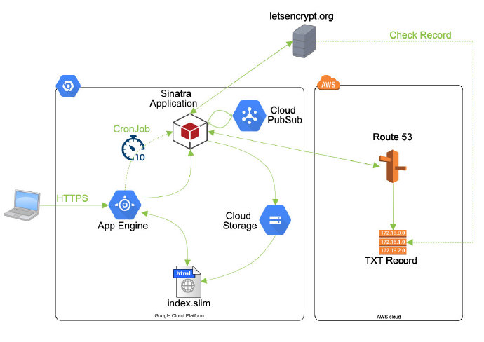

おっすー
今回はまたサーバレスの話ですね。
いつもAWSの話を書かせてもらっていますが、別にAWSしか使わないよー的なユーザーではないすね。GCP利用したものをお話しましょう。
タイトル通り、サーバレスで、SSL証明書を自動取得、自動更新、一括管理のサービスです。
前触れ
昨今、インタネット・通信分野におけるセキュリティ問題が多発し、データの暗号化やなりすまし対策が重要視とされています。
APP開発において、iOSのATS(App Transport Security)必須化などが時代のトレンドとなり、HTTPSの利用は、本番だけではなく、開発中にも求められている。
ご存知の通り、SSL証明書の取得って、面倒の塊のようなものです。
そこで、今回は、簡単にSSL証明書を取得・更新・管理のできるサービスを立ち上がると思います。
どんなサービス
利用したもの
- Google App Engine
- AWS Route53
- Golang(クライアント側)
- sinatra(サーバ側)
- Acmesmith
- acmesmith-google-cloud-storage(google storageに証明書を保存するためのgem)
どんな構成

上記の通り、クライアントからリクエストが来たら、まずPATHによって判断されます。
管理ページみたい場合、一覧を表示される。apiを利用したい場合、必要によって処理を走り、適当なリスポンスを投げ返す。
GAEのcronjob機能を利用し、証明書の有効期限を自動延長します！
追加Gem
1 | gem "acmesmith" |
……
ホントは、ここで実際rubyとgoのコードを見せながら説明を進んだ方がもっとわかりやすいですが、大人の事情のやつで、ここはコードを割愛させてくださいm(＿ ＿)m
update
Cloud PubSubを利用し、非同期処理も入れました。
要は、Webページでポッチたらhomepageにリダイレクトし、裏で証明書の処理を対応する仕組みですね。
どんな効果
本番環境はさすがにACMなどを利用し、証明書を取得する方が得策の気がします。
開発環境とステージング環境は、全部このサービスを使えます！
あと、サーバレスなので、サーバの面倒を見なくても普通に動いてくれる！
今回はめちゃくちゃ短くて申し訳ございません。
また気が向いたら、ここでシェアしますー